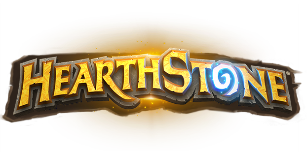

Hobbijaim
Nincs sok hobbim, mert a munkám az ami igazán kikapcsol de ezeket csinálom szabadidőmben.
- Videójátékokkal játszom
- Olvasok
- Sorozat nézek
- Deszkázom
Legtöbbször kikapcsolódni videójátékokkal szoktam. Az általam leginkább kedvelt játékok:
| Név | Sims 4 | Hearthstone | Minecraft | Call of Duty: Warzone | Crash of the titans |
|---|---|---|---|---|---|
| Logó |  |
|
|
||
| Lejátszott órák | 26 óra 48 perc | 31 óra 2 perc | 150 óra 24 perc | 45 óra 57 perc | 50 óra 15 perc |
A játékokról
Sims 4
A The Sims 4 egy életszimulációs játék, amit a Maxis és a Sims Studios fejlesztett, és az Electronic Arts jelentetett meg. Windows platformra 2014. szeptember 4-én jelent meg Európában.
Hearthstone
A Hearthstone egy free-to-play gyűjtögetős kártyajáték, melyet a Blizzard Entertainment fejleszt. 2015 májusában a regisztrált Hearthstone fiókok száma meghaladta a 30 milliót. Egy évvel később a játék már 50 millió regisztrált felhasználót tudott maga mögött, míg 2017. májusában ez a szám elérte a 70 milliót. 2018. november 5-én a regisztrált Hearthstone játékosok száma elérte a 100 milliót.
Minecraft
A Minecraft nyílt világú sandbox videójáték, melyet a svéd Markus Persson indított útjára 2009-ben, és a Mojang adott ki 2011-ben. 2014-ben a Microsoft felvásárolta a játék fejlesztésével és kiadásával foglalkozó céget, ezzel együtt birtokukba került a Minecraft tulajdonjoga is. A Minecraft minden idők legkelendőbb játéka. 2020 májusára 200 millió példányt adtak el belőle valamennyi platformon, továbbá havi szinten 126 millió aktív játékossal rendelkezik.
Call of Duty: Warzone
A Call of Duty - Warzone egy ingyenesen játszható FpS játék az Infinity Ward és Raven Software fejlesztése és az Activision publikálásában, Xbox One-ra, Playstation 4-re és Windowsra. 2020. március 9-én jelentették be, majd másnap március 10-én megjelent.
Crash of the titans
A Crash of the Titans videójáték 2007 októberében jelent meg a Radical Studios közreműködésével. Wii, Nintendo DS, Game Boy Advance, Xbox 360, PlayStation 2, PlayStation Portable platformokra készült pc-re nem is jelent meg.